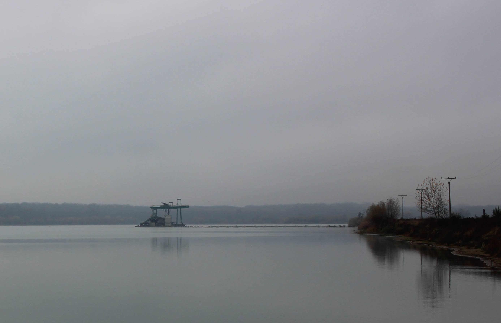
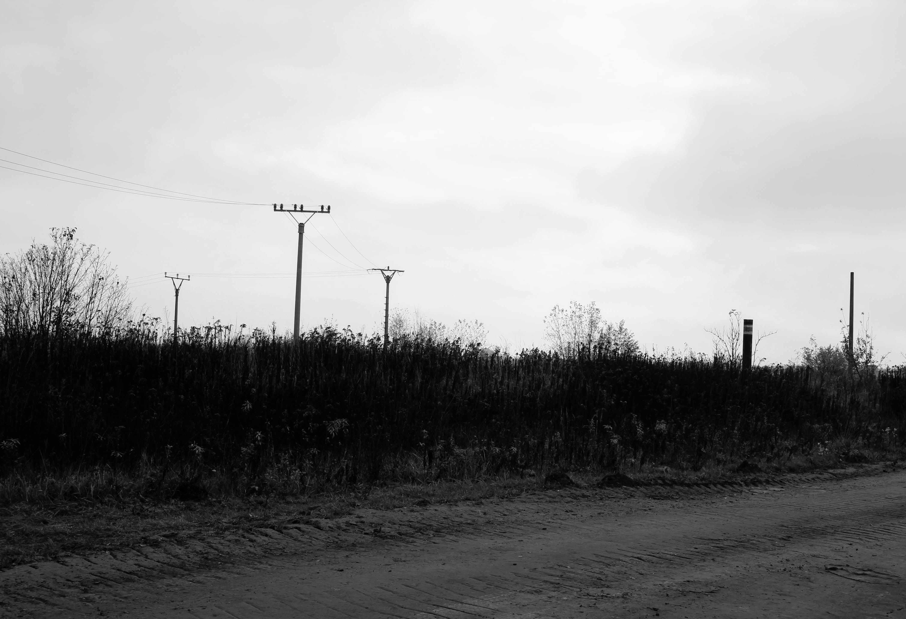

Ale tady už to bylo jiné - procházky postindustriální krajinou mám radši v létě

No jo, ale o den později jsme se vydali do roviny. A opět mi došlo, že bydlím v jiném typu krajiny, který, mi konvenuje o dost víc.
Naše přestěhování pod Větřák nebylo výsledkem nějakých příliš intenzivních úvah. Prostě jsme se jeli podívat na ten levný polorozbořený domeček a koupili ho. Z dnešního pohledu se zdá neuvěřitelné, jak málo jsme za něho tehdy zaplatili a také málo úvah jsme věnovali tomu, zda se tu bude dát nějak žít. Každopádně jsme v moha ohledech měli štěstí - na lokalitu, lidi i dopravní dostupnost.
Jasný, restaurace, kultura, stav veřejného prostoru nebo nálada jsou v Kroměříži jedna velká tragédie, ale jinak to jde. Do kina, divadla nebo na jídlo si člověk zajde do Zlína, Brna, Přerova nebo Uherského Hradiště. Autem jste za necelou hodinu v Brně, Olomouci nebo třeba v Luhačovicích... No a ta zvlněná krajina s výhledy na Hostýn, Chřiby a Bílé Karpaty má rozhodně něco do sebe.

Když se ale vydáte do roviny, estetika krajiny se samozřejmě posune. A ne vždy k lepšímu. Procházka okolo Hulína protáhla tělo, ale mysl v kopcích zůstala. Postindustriální lada chce prostě určité rozpoložení a hledat krásu v pískovně, na to teď moc nemám síly. Podzim je u mě takové akumulační období. Víc odpočívám, sbírám síly, trénuju ledviny, dělám spirálovité pohyby, přitahuju se na kruzích, skřehotám listopadový písně a vůbec různě podporuju proudění energie. A potřebuju krásu okolí.
V létě je mi to fuk, to bych si klidně udělal výlet třeba někam do výsypky hnědouhelného dolu. A hledal tady krásu v přírodní sukcesi. Ale na podzim potřebuju pěknou kulturní krajinu a spokojenou černozem. Takže tak, no.
Ale abych tady nehaněl hanáckou rovinu, lesy a louky třeba okolo Kojetína a Chropyně jsou nádherné. Ale Hulín... no nevím...